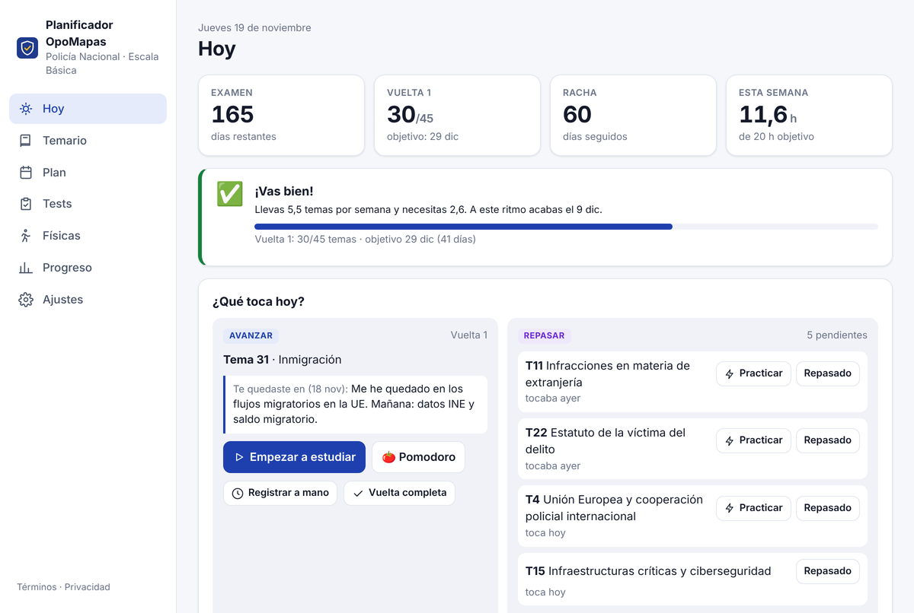

Vueltas, repasos, tests, horas de estudio, plan semanal y pruebas físicas en un solo sitio. Para la Escala Básica de Policía Nacional y la Escala de Cabos y Guardias de Guardia Civil.
Después, pago único de 9,99 € 19,99 € para siempre. Sin suscripciones.

Los 45 temas de Policía Nacional o los 22 de Guardia Civil. Clasifica cada tema: No lo sé, Flojo, Bien o Dominado.
Contador de vueltas por tema y fecha objetivo para cerrar cada vuelta. Tú decides cuándo vuelves a cada tema.
Registra cada sesión con minutos y una nota, o usa el temporizador y el Pomodoro. Al volver, sabes exactamente dónde retomar.
Reparte los temas que faltan hasta tu fecha objetivo, día a día, y añade tus clases y simulacros.
Apunta cada test: tu nota con la fórmula del examen, su evolución y los temas en los que más fallas.
Preguntas tipo test y trampas de examen de cada tema, de OpoMapas, para repasar en 5 minutos.
Policía Nacional: nota orientativa de cada prueba. Guardia Civil: apto o no apto según tu edad.
Sincronizado en todos tus dispositivos, instalable como app y funciona sin conexión.
No. Entras con tu cuenta de Google y tienes 3 días con todo desbloqueado.
Si te convence, haces un único pago de 9,99 € y sigues donde lo dejaste: tus datos se conservan.
Sí: pagas una vez y tienes acceso mientras el servicio exista, con todas las mejoras que se vayan añadiendo.
Sí. Al empezar eliges Policía Nacional (Escala Básica) o Guardia Civil (Escala de Cabos y Guardias) y la app se adapta: temario, pruebas físicas y nota de los tests. Puedes cambiar cuando quieras.
No incluye el temario: organiza tu estudio con tus apuntes o los de tu academia. Sí trae un repaso rápido con preguntas tipo test y trampas de examen de cada tema (de OpoMapas, de elaboración propia) y te deja apuntar tus tests y simulacros. Los mapas del temario están en la tienda OpoMapas.
No. Es una herramienta independiente, sin relación con la Policía Nacional, la Guardia Civil ni el Ministerio del Interior.